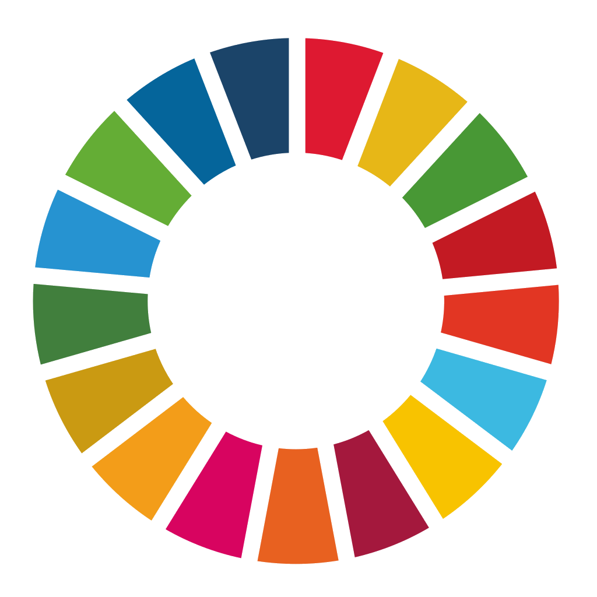

Igualdad de Genero


La politica nacional de la igualdad entre mujeres y hombres es un avance sustantivo en nuestro pais ya que establece las acciones del gobierno para lograr igualdad entre genros y los hambitos politicos, economico,social,laboral,cultural e institucional. la igualdad de genro implica que todas las personas tengan los mismos derechos,recursos y oportunidades independientemente de su identidad de genero y sean tratadas con el mismo respeto en todos los aspectos de la vida cotidiana:trabajo,salud,educación


SOLUCIONES